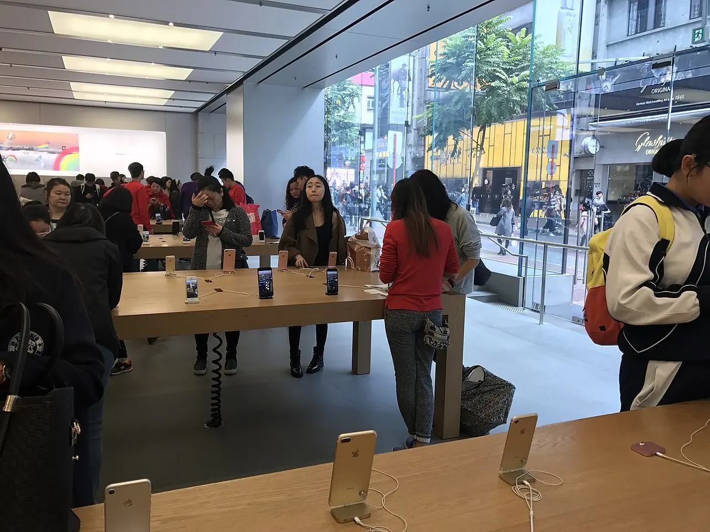

애플 주식을 볼 때 가장 쉬운 문장은 “애플도 인공지능을 합니다”입니다. 그런데 주주에게 필요한 질문은 조금 더 좁습니다. 인공지능 기능이 실제 아이폰 교체 이유가 되는지, 서비스 매출이 높은 마진을 계속 지키는지, 관세와 부품 가격이 제품 마진을 얼마나 누르는지가 더 중요합니다. 발표 영상은 하루 동안 주가를 흔들 수 있지만, 주당순이익은 결국 판매량, 마진, 현금흐름이 만듭니다.
Apple의 2026 회계연도 2분기 발표는 겉으로 보기에는 아주 강했습니다. 2026년 3월 28일로 끝난 분기 매출은 1,112억 달러로 전년 동기 대비 17% 증가했고, 희석 주당순이익은 2.01달러로 22% 늘었습니다. 회사는 iPhone 매출과 총 매출, 주당순이익이 2분기 기준 최고액을 기록했다고 밝혔고, Services 부문은 역대 최고 매출을 다시 썼습니다.
그래도 이 글의 출발점은 “좋은 회사”라는 감탄이 아닙니다. 애플은 이미 좋은 회사입니다. 그래서 더 까다롭게 봐야 합니다. 성장률이 높아진 이유가 일시적인 교체 수요인지, 서비스 결제 기반이 구조적으로 커지는지, 관세와 부품 비용을 가격과 제품 믹스로 흡수할 수 있는지 순서대로 확인해야 합니다.
서비스 마진이 방어선을 만듭니다

Apple 2026 회계연도 2분기 연결재무제표를 보면 Products 매출은 802억 800만 달러, Services 매출은 309억 7,600만 달러였습니다. Products의 매출총이익률은 계산상 약 38.7%이고, Services의 매출총이익률은 약 76.7%입니다. 전체 매출총이익률은 약 49.3%입니다. 이 차이가 애플 분석의 핵심입니다.
아이폰은 애플의 문을 여는 제품입니다. 사용자가 아이폰을 사면 앱스토어, 아이클라우드, 애플뮤직, 애플페이, 애플케어, TV와 게임 구독이 따라붙을 수 있습니다. 기기 판매는 한 번에 크게 잡히고, 서비스 매출은 더 오래 남습니다. 그래서 애플의 이익 구조는 “아이폰을 얼마나 팔았나”와 “팔린 기기에서 얼마나 오래 결제가 이어지나”를 함께 봐야 합니다.
서비스 매출이 강하다는 말은 주가에 좋은 방어선입니다. 하지만 이 방어선은 공짜가 아닙니다. 앱스토어 수수료와 결제 구조는 각국 규제의 압박을 받습니다. 클라우드 저장소와 콘텐츠 구독은 경쟁도 많습니다. Services의 높은 마진이 유지되면 애플은 하드웨어 사이클의 흔들림을 견딜 수 있지만, 규제나 가격 저항이 커지면 “고마진 서비스 기업”이라는 프리미엄도 같이 조정될 수 있습니다.
아이폰 교체는 AI보다 지갑을 봅니다
관련 영상
애플의 인공지능 전략과 데이터 병목을 설명하는 한국어 롱폼 영상
애플 인공지능 기능은 분명 중요합니다. 온디바이스 처리, 개인정보 보호, 앱 생태계와의 결합은 애플이 다른 인공지능 기업과 다르게 가져갈 수 있는 영역입니다. 다만 투자자는 기능 소개보다 소비자의 구매 행동을 먼저 봐야 합니다. 새 기능이 멋져도 기존 아이폰으로 충분히 쓸 수 있다면 교체 수요는 크게 빨라지지 않습니다.
아이폰 교체는 결국 지갑의 문제입니다. 프리미엄 모델 가격, 통신사 보조금, 할부 부담, 중고 보상 가격, 배터리 성능, 카메라와 화면 차이가 함께 작동합니다. 인공지능 기능이 강한 교체 이유가 되려면 사용자가 매일 쓰는 사진, 메시지, 메일, 검색, 문서, 일정 관리에서 분명한 시간을 줄여야 합니다. “기능이 있다”와 “새 기기를 사야겠다” 사이에는 꽤 넓은 간격이 있습니다.
이번 분기에 아이폰 매출이 2분기 기준 최고액을 기록했다는 점은 긍정적입니다. 그러나 다음 확인 지점은 더 구체적이어야 합니다. 프리미엄 모델 비중이 유지되는지, 중국과 인도처럼 서로 다른 시장에서 수요가 동시에 이어지는지, 미국과 유럽에서 할부 부담이 교체를 늦추지 않는지 봐야 합니다. 애플 주가가 오래 강해지려면 단순한 신제품 흥행보다 설치 기반의 결제 능력이 살아 있어야 합니다.
관세와 부품 가격은 조용한 변수입니다
Apple의 2026 회계연도 2분기 10-Q는 관세와 무역 조치가 공급망, 원재료와 부품 조달, 가격, 매출총이익률에 영향을 줄 수 있다고 설명합니다. 이 문장은 화려하지 않지만 중요합니다. 애플은 강한 브랜드를 가졌지만, 모든 비용을 소비자에게 곧바로 넘길 수 있는 회사는 아닙니다. 가격을 올리면 마진은 지킬 수 있지만 교체 수요가 느려질 수 있습니다.
부품 쪽에서는 퀄컴과 브로드컴, 삼성전자를 같이 보는 이유가 있습니다. Qualcomm의 FY2026 2분기 자료에서 Handsets 매출은 60억 2,400만 달러로 전년 대비 13% 감소했습니다. 회사는 중국 고객의 핸드셋 매출이 다음 분기에 바닥을 찍고 이후 회복될 수 있다고 봤습니다. 이 숫자는 애플만의 수요를 말하지는 않지만, 고급 스마트폰 부품 수요의 온도를 읽는 데 도움이 됩니다.
Broadcom의 FY2026 1분기 자료는 다른 방향의 비교를 보여줍니다. Broadcom은 AI 매출이 84억 달러로 전년 대비 106% 증가했다고 밝혔고, 반도체 솔루션 매출도 크게 늘었습니다. 애플은 소비자 설치 기반과 서비스 마진으로 설명되는 회사이고, Broadcom은 AI 반도체와 네트워킹 성장으로 설명되는 회사입니다. 같은 대형 기술주라도 주가 프리미엄의 출처가 다르다는 뜻입니다.
삼성전자도 단순 경쟁사로만 보면 부족합니다. 삼성전자의 2026년 1분기 발표는 메모리 가격과 고부가 제품 수요가 얼마나 강한지 보여줍니다. 메모리와 디스플레이, 모바일 부품 가격이 올라가면 공급망 기업에는 좋은 일이지만, 완제품 기업인 애플에는 원가 부담이 될 수 있습니다. 애플 주주가 부품사를 보는 이유는 대체 투자처를 찾기 위해서만이 아니라 애플 제품 마진의 압력을 읽기 위해서입니다.
주주는 다섯 숫자만 순서대로 보면 됩니다
첫 번째는 iPhone 매출 성장률입니다. 이번 분기처럼 기록을 만들면 좋지만, 다음 분기에도 교체 수요가 이어지는지가 더 중요합니다. 두 번째는 Services 매출과 매출총이익률입니다. Services가 70%대 중반의 마진을 유지하면 애플의 이익 방어력은 여전히 강합니다.
세 번째는 Products 매출총이익률입니다. 아이폰이 잘 팔려도 부품, 관세, 환율, 물류비가 Products 마진을 누르면 주가는 민감하게 반응할 수 있습니다. 네 번째는 영업 현금흐름입니다. 이번 분기에 280억 달러를 넘는 영업 현금흐름을 만든 점은 자사주 매입과 배당을 뒷받침합니다. 다섯 번째는 자사주 매입 속도입니다. 1,000억 달러 증액은 주당순이익을 지지하지만, 매출 성장 둔화를 영원히 가릴 수는 없습니다.
상승 시나리오는 단순합니다. 인공지능 기능이 프리미엄 아이폰 교체 이유가 되고, Services 결제가 설치 기반 안에서 계속 늘며, 관세와 부품 비용이 Products 마진을 크게 훼손하지 않는 경우입니다. 이때 애플은 하드웨어 회사가 아니라 소비자 결제 관계를 가진 플랫폼 회사로 다시 평가받을 수 있습니다.
반대로 하락 시나리오도 분명합니다. 인공지능 기능은 화제가 되지만 교체 수요는 느리고, Services는 규제 압박을 받고, Products 마진은 관세와 부품 가격으로 눌리는 경우입니다. 애플이 무너진다는 뜻이 아닙니다. 다만 좋은 회사라도 주가가 기대를 많이 담고 있을 때는 작은 마진 흔들림도 크게 보일 수 있습니다.
그래서 지금 애플을 볼 때는 “AI를 하느냐”보다 “AI가 교체 수요를 만들었느냐”를 먼저 물어야 합니다. 그다음 Services 매출총이익률, Products 마진, 영업 현금흐름, 자사주 매입을 차례로 확인하면 됩니다. 이 순서가 맞으면 애플의 방어력은 숫자로 확인됩니다. 순서가 어긋나면 발표 행사보다 다음 실적표가 더 중요해집니다.
이 글은 특정 종목의 매수나 매도 추천이 아닙니다. 투자 판단 전에는 Apple의 최신 공시, 실적 발표, 제품 수요, 관세와 규제 변수를 함께 확인해 주세요.